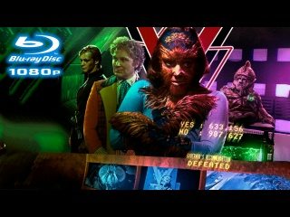
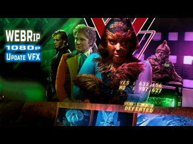
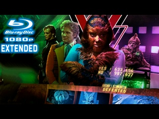
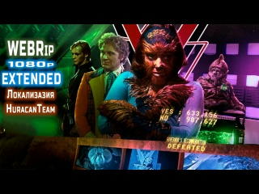
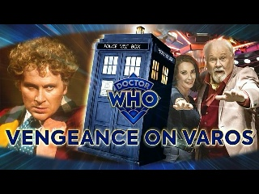
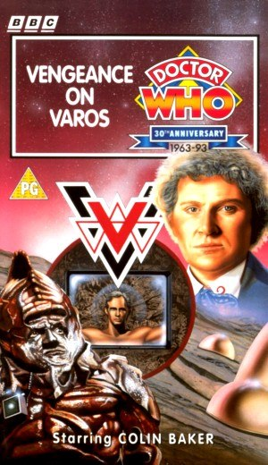
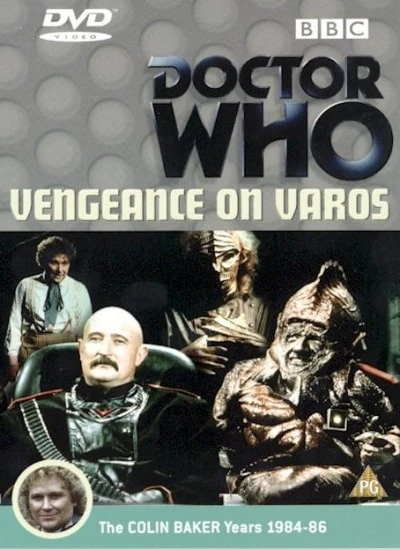
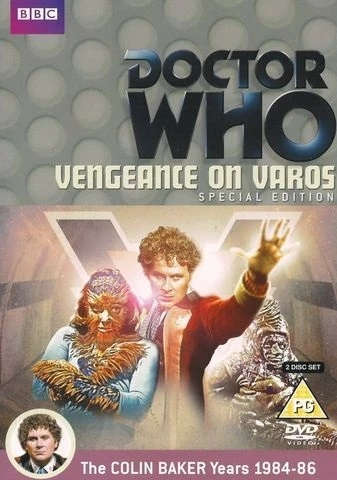
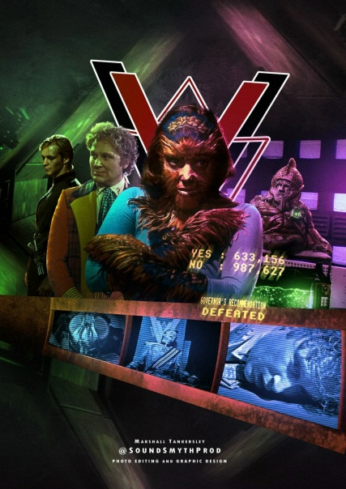
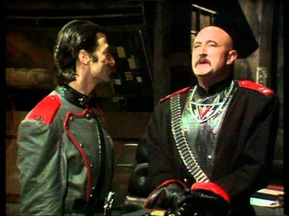

Субтитры: Русские {Ольга Олексеева} и Английские |  |
|---|---|
с фанатским обновлением визуальных эффектов (cunningmunki) Субтитры: Русские {Ольга Олексеева} и Английские |  |
Субтитры: только Английские |  |
с фанатской локализацией видеоряда (HuracanTeam) Субтитры: только Английские |  |
Субтитры: Русские {Jaskier} и Английские |  |
Vengeance on Varos
Дата выхода: 19-26 января 1985
Формат: 2 эпизода по 45 мин.
|
ТАРДИС застревает — ей нужен Zeiton-7, редкий минерал, который добывают только на Варосе. Варос — планета-тюрьма, где власть держится на публичных казнях, транслируемых в прямом эфире как развлечение для населения. Губернатор пытается заключить сделку с галактическим магнатом Силом — рептилиеподобным дельцом с планеты Тиволи, который диктует условия и прижимает Варос к ногтю. Доктор и Пери оказываются втянуты в интриги власти, восстания и жестокие игры, где человеческая жизнь — товар.
Серия — острая сатира на массмедиа, реалити-шоу и безжалостность власти, которая развлекает народ казнями. Сил в исполнении Ника Джелба стал одним из самых запоминающихся злодеев Шестого Доктора. А Варос с его публичными пытками-шоу выглядит до жути современным — многое из этого уже стало реальностью.
 VHS - май 1993 |  DVD - 15 октября 2001 |
|---|---|
 DVD-SE - 10 сентября 2012 |  Blu-ray - 20 июня 2022 * Версия в нашей группе |
 В 2023 году вышел сериал, где спутники доктора вспоминают свои приключения в консольной комнате "ТАРДИС воспоминаний". По сути идет полный повтор старых серий со вставками постаревших актеров в начале и в конце. В 2023 году вышел сериал, где спутники доктора вспоминают свои приключения в консольной комнате "ТАРДИС воспоминаний". По сути идет полный повтор старых серий со вставками постаревших актеров в начале и в конце.В "Историях ТАРДИС" эта серия является ТРЕТЬЕЙ! |

